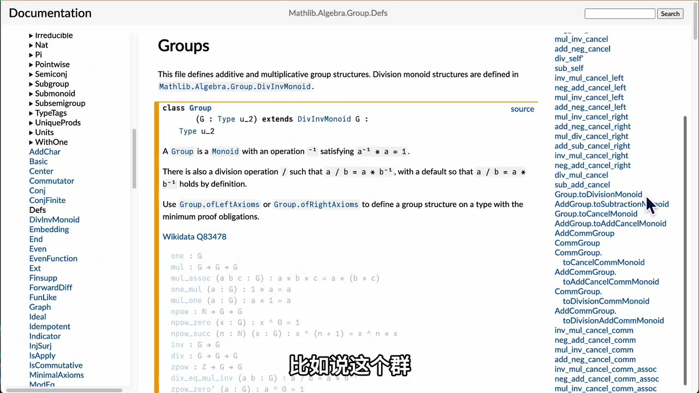

原视频 · 在线回看
点击后联网加载 B 站播放器；本地不下载整段视频。

原视频 · 在线回看
点击后联网加载 B 站播放器；本地不下载整段视频。
原视频标题：【闪客】你管这破玩意叫 Lean？为什么它能保证绝对正确
上传者：飞天闪客
时长：13:50
来源：Bilibili 视频页
总结强度：standard
如果一段数学证明交给机器检查，机器具体检查什么？我们先把数字、加法这些概念都放在一边，只看命题 。这里的 可以是任意对象；等号左右写的是同一个 ，所以这条命题成立。Lean 把这种等式自反性记作 rfl。写下策略后，系统就能把这个目标证明完。
在 Lean 里，一个命题也可以写成程序要完成的目标。例如 example (x : ℕ) : x = x := by rfl：example 开始声明一个例子，x : ℕ 说明变量 x 是自然数，第二个冒号后面写着要证明的命题，by 后面开始写证明步骤。rfl 适用于等式两边相同的情形，因此这里一行就够了。
这个例子同时展示了 Lean 的工作方式：我们先说明要证明的命题，再用一条策略处理它。把 rfl 删掉，编辑器会提示目标仍未完成，并展示当前还需要证明什么；补回 rfl，目标状态就清空了。策略（tactic）可以理解为帮助我们构造证明的操作指令。它们把当前目标拆开、改写或化简，直到 Lean 得到足以交给内核检查的证明。
接下来把问题从“两个表达式相同”推进到“已知一个关系，推出另一个关系”。如果假设 ，证明过程中就可以用这个已知等式替换目标里的 。Lean 的 rw 会按指定等式改写目标；改写后如果等式两边相同，它会自动结束证明。
读这一步时，可以把编辑器的目标状态当作一张实时草稿纸：应用 rw 前，它显示原来的目标；应用之后，目标里符合条件的 被替换为 。这样我们就能看到策略怎样改变证明目标。
另一个例子是证明“存在一个自然数大于 5”。存在性命题需要给出一个具体对象作为例子；这里可以先用 use 6，把目标转为 ，再用 omega 处理这个算术目标。use 提供见证，omega 负责解决这类简单的算术证明。
所以，策略并非让机器凭感觉接受一句话。它们逐步改变待完成的目标，并构造出对应的证明。复杂证明会把很多小目标连接起来：想证明 A，先把它化为 B；再由 B 得到 C；最后用能直接检查的基础事实收尾。
写好的定理可以命名，供其他证明引用。一个新命题若与已有定理的结论相符，可以通过 exact 直接使用那个定理提供的证明。命名和复用十分关键：大型证明不必把已经完成的每个底层步骤重写一遍，而能逐层建立在先前结果之上。
还可以暂时用 sorry 占住一个尚未完成的证明位置，让后续代码继续编写。Lean 会给出警告；因此，依赖这个位置的结果仍包含一个没有完成的证明义务。它适合在协作过程中先标明工作接口，不能把带有未完成占位符的定理当作已经通过完整证明检查的结果。
数学库也按层组织。最底下的 Lean 内核负责检查逻辑规则；自然数、加法、大小关系以及相关定理需要在形式系统中逐步定义。再往上，Mathlib 这样的库提供更多基础数学概念和已证明结果。它像一套可复用的积木库，让新的形式化工作能从既有概念继续搭建，而不用每次都从最底层重来。
在这个结构里，策略负责构造证明，内核负责检查构造出来的证明是否真的对应当前命题。内核检查通过，说明在 Lean 使用的定义、规则和假设之下，形式化命题确有一份合格证明。这个保证的边界也很清楚：它检查的是写进 Lean 的命题；如果人把研究问题形式化错了，机器依然可能正确地证明了另一个命题。使用了 sorry 之类的未完成证明时，也不能宣称整个结果已经完成形式化证明。
OpenAI 发布的数学手稿仓库展示了这种分层怎样用于大项目。仓库索引按照成果组整理论文，并为形式化部分标明涉及范围；其中一个成果组包含三篇自然语言论文和数个 Lean 文件。描述问题的 Lean 文件可能只把命题写清楚，并留下 sorry；旁边的解答文件再提供具体证明。追踪这个解答，会看到它引用更多已命名定理，最后落到 Mathlib 等库提供的基础结果上。
因此，看到一份很短的证明代码，并不意味着背后只有一两步推理。它可能只是调用了一个已经被证明过的高层定理；该定理又依赖更基础的结果。每一层把大量细节收进可复用的命名结果里，调用者仍可沿着依赖关系继续追踪。视频还提到，仓库当时列有 721 篇手稿、373 个成果组，并称约 42% 的成果提供了 Lean 形式化证明。这些数字描述的是视频录制时对该仓库的介绍，不能直接当作今天的统计，也不表示每篇论文的全部论证都已形式化。
形式化工作也能拆给多人并行推进。陶哲轩与 Lean 社区合作推进复杂猜想形式化时，先把论文证明拆成依赖图，标出定义、子定理以及彼此依赖的关系，再用不同颜色区分已经形式化和仍待完成的部分。某项底层定理尚未完成时，可以先留下带警告的占位符，让其他人继续形式化不依赖其证明细节的部分；完成后再补上证明。这样的安排把“做完一篇大证明”拆成可以分工的任务。
另一个等式理论项目要求参与者处理大量蕴含关系，判断关系能否成立并为相关结果提供证明或反例。上传者把这类工作看作持续建设数学基础设施的一部分；人和 AI 工具都可以参与，项目进度则能通过仪表盘查看。
围绕 AI 进入数学研究，有两类讨论同时出现：研究者推动 Lean 形式化和数学自动化工具，数学家也会对公司发布 AI 数学成果的方式提出质疑。按上传者的概括，陶哲轩支持 AI 辅助形式化和工具建设，同时批评把解难题当成展示模型能力的指标；争论涉及的目标不同，不能简单归结成数学家拒绝新技术。
上传者最后补充了自己的看法。面对当时 OpenAI 发布的一个计算机科学结果，他开始重新考虑：如果模型将数学难题作为研究目标，结果能否超出人类已有认识，这种目标也可能带来价值。他用证明 或发现永动机理论作极端假设，提出即使人们暂时无法理解推导过程，结果本身也可能值得研究。这里表达的是他的个人推测，例子用于说明观点，不代表这些结果已经发生。
Lean 把数学命题变成待完成的目标，策略逐步构造证明，内核检查证明是否符合形式化命题。Mathlib 等库提供可复用的底层结果，让大型工作能够按定理依赖逐层搭建、协作推进。检查结论仍取决于命题、定义、假设和证明是否完整表达了原本要研究的内容。
rfl 开始use 与 omega 的算术例子sorryrfl 适合处理什么样的等式目标？rewrite 改变待证明的目标？